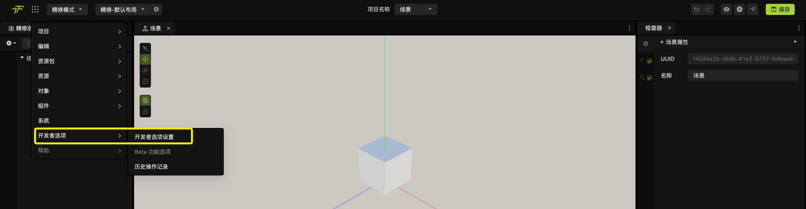
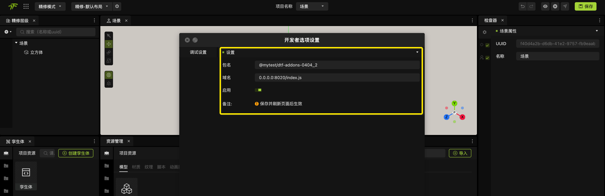
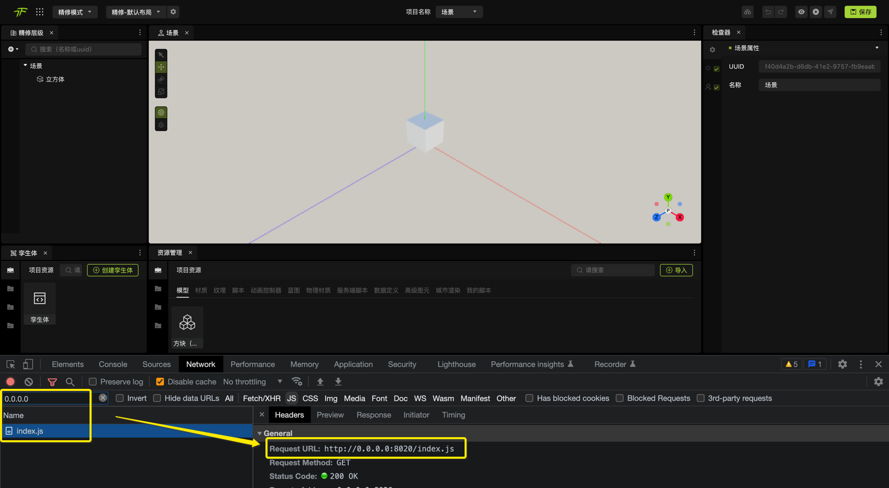
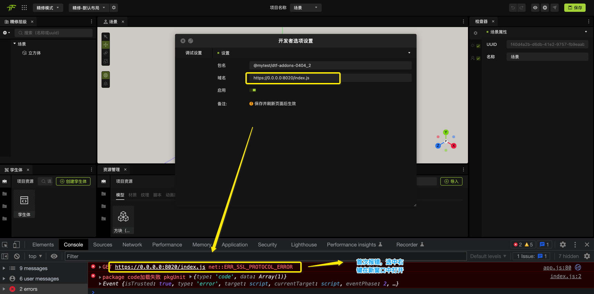
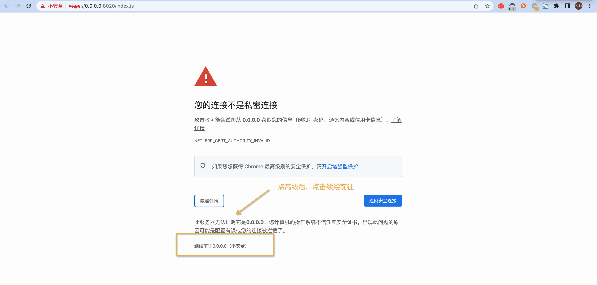

选择编辑器菜单中的“开发者选项”->“开发者选项设置”
填写调试设置配制必须配制参数
备注：设置后需要保存后刷新页面才能生效
启用并保存后，再刷新页面，会加载该调试文件，在network中查看是否加载，加载后调试成功，再验证功是生效
备注
如是页面是https,因跨域问题，则采用`tnpm run starts启动https服务,而非tnpm run start`启动http;
首次可能会出现打开的失败问题, 解决方案如下：
第一步：打开控制台
第二步：继续查看页面
